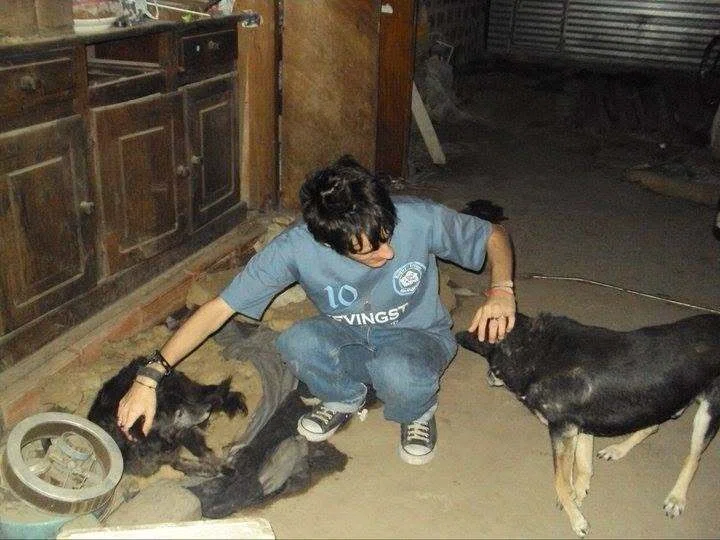
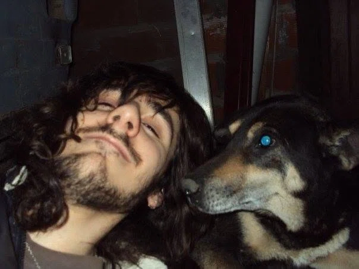

True Way To Love
Sometimes we search within faith for answers to pain, for answers to disturbing, inexplicable questions, and for answers to the silence that deprives us of sleep. Today, I talk about "True Way To Love", a song released in 2016 that explores this very pursuit.
Lyrics
Why keep denying that we need each other?
In your eyes, I see you yearning for me.
People get used to living through deception,
when in reality, all they truly want is to love.
In giving,
sometimes you lose.
Sometimes it breeds pain.
That is, precisely,
the only real way to love.
Memories of playing in the mud.
Memories of Veivi and Sam, my beloved dogs.
Just a few words from you fill my heart.
A blank space in time, seeking your solidarity.
In giving,
sometimes you remember.
Sometimes you believe.
That is, precisely,
the only real way to love.
I want to show you how I love.
But while you keep talking, you cannot hear.
Your presence holds a saving grace.
Let me hold you, and feel what true love is.
In giving,
sometimes you try.
Sometimes you simply exist.
That is, precisely,
the only real way to love.
Journal Entry — August 17, 2013
Two weeks ago, I was jamming with Mauro (my sister's boyfriend). He brought his bass guitar and lent it to me for a few minutes. Playing along with him, a bass rhythm suddenly surfaced like magic (I had never played bass before, aside from messing around briefly at 17). When listening back to the rehearsal, I loved the melody and knew I wanted to turn it into a song.
Tomorrow, a coworker named Bárbara invited me to attend her church in Florencio Varela. She seemed like a wonderful woman, and I liked her a lot. Knowing about the recent breakdown of her relationship that left her hurt, I decided to write a song for her. This was meant to be that song.
Yesterday, I learned that she got back together with her ex. Because of that, my original concept transformed into something entirely different, ultimately speaking about a more universal, transcendent "way of loving." Of course, my personal longing for love and human fantasies are clearly visible in the lyrics, but what the track actually conveys is that people create their own way of loving.
Thus, a rough sketch born with modest expectations turned into something that shook me deeply. I came close to tears at moments, moved by my own sensitivity toward the music where my soul resides.
From ambiguity to wonder. It is astounding to see what it transformed into.

Journal Analysis — August 18, 2013
In the end, a young girl from that church passed away, and everything was canceled. So today I spent time polishing the final lyric revisions and recording a few satisfactory takes. Here is a straightforward analysis of the lyrics, leaving nothing hidden.
Why keep denying that we need each other?
In your eyes, I see you yearning for me.
People get used to living through deception,
when in reality, all they truly want is to love.
This section remains from the original song dedicated to that girl. The latter half briefly touches upon the game of "flirting" people play, revealing the underlying human desire beneath it. While rewriting, I tried to give it a broader meaning, considering how cold and distant people can be. Yet beneath it all lies fear, forcing masks onto beings who simply wish to love.
In giving,
sometimes you lose.
Sometimes it breeds pain.
That is, precisely,
the only real way to love.
This first stanza depicts a person attached to their possessions. Naturally, if you give while holding onto attachment, there is a chance of loss. In fact, it is highly probable that what we give won't return in the exact form expected. For instance, some donate money expecting more than just a smile in return.
Pain operates the same way—it stems from illusion. A person offers their whole heart, but by expecting too much through fantasy, they end up inflicting disappointment upon themselves.
Memories of playing in the mud.
Memories of Veivi and Sam, my beloved dogs.
Just a few words from you fill my heart.
A blank space in time, seeking your solidarity.
Evoking memories from a specific time and space—in this case, personal childhood memories—shows that alternative forms of love exist beyond the socially constructed model of a "couple."
Those past longings unconsciously seek fulfillment through new forms of personal love, as the individual attempts to fill those empty spaces.
In giving,
sometimes you remember.
Sometimes you believe.
That is, precisely,
the only real way to love.
Referencing the aforementioned "memories," and drawing from the concept established in other songs—"to believe is to manifest"—it demonstrates that to believe is to love.
I want to show you how I love.
But while you keep talking, you cannot hear.
Your presence holds a saving grace.
Let me hold you, and feel what true love is.
The woman who inspired the lyrics once told me that while she could feel close to anyone, only one true love exists. Here, I tried to present the concept I truly believe in. The phrase "while you keep talking, you cannot hear" was actually directed at Matías a few days prior—the guy who first invited me to church and tried to persuade me to join their congregation. He kept imposing things I didn't want while talking non-stop. When I voiced my fear of being ignored or alienated at Barbie's church, I told him those exact words.
Adding the embrace near the end represents part of that fantasy of personal love, guiding toward the feeling I endlessly seek.
In giving,
sometimes you try.
Sometimes you simply exist.
That is, precisely,
the only real way to love.
One must begin with intention, by trying. As stated in Asma Mental, approach things with clear intent. It won't always go as expected, but it is worth trying. It is better to act and regret than to carry eternal doubts and guilt without ever trying. If our actions stem from goodwill and sincerity, the outcome should remain separate from our inner peace.
Then comes: "Sometimes you simply exist... that is the only real way to love." I always prefer placing the most contemplative phrase at the very end.
We were born to exist. If the world is composed of love, if love is needed within, if the willow tree breathes love, if sheep graze on love, and if stones rest within love, then simply existing universally is love itself. Free from complex thoughts and human constructs, that is the true way to love.
